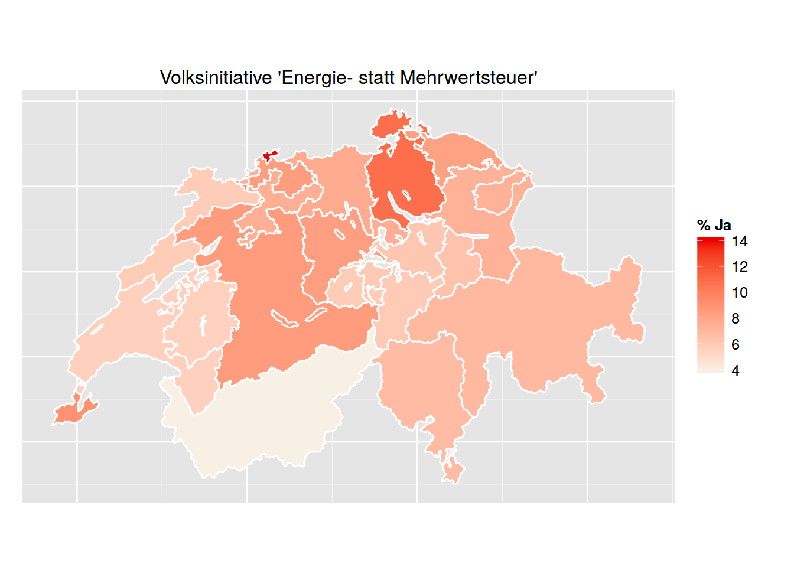
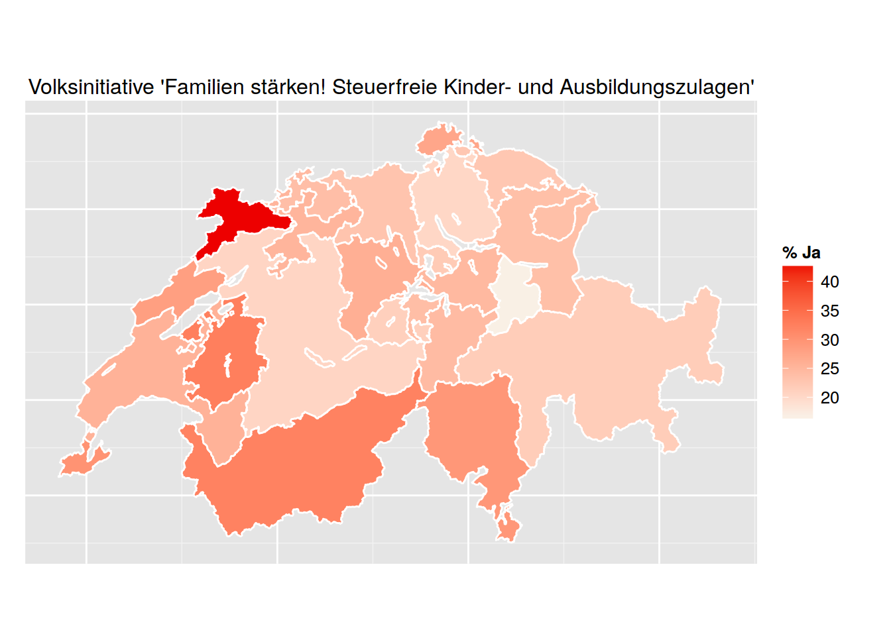

Am vergangenen Sonntag stimmten die Schweizer StimmbürgerInnen über zwei von den Parteien GLP und CVP lancierte Volksabstimmungen an. Beide wurden deutlich abgelehnt. Die Grünliberale Partei erzielte mit ihrer Initiative “Energie- statt Mehrwertsteuer” sogar das zweitschlechteste Abstimmungsergebnis der Schweizer Geschichte. Die beiden Abstimmungen zeigten erneut die Schwierigkeit, die BürgerInnen von einer Änderung des Status Quo zu überzeugen.
Die direkte Demokratier erfährt in Deutschland konstant hohe Zustimmungswerte in Meinungsumfragen. Entsprechend wird sie oft als institutionelle Antwort auf wachsende politische Unzufriedenheit, wie sie sich auch in Einzelphänomenen wie PEGIDA manifestiert, diskutiert, von populistischen Bewegungen wie dieser auch explizit eingefordert. Auf Ebene der Länder und Kommnen wurde wurde die Direkte Demokratie in den vergangenen Jahren und Jahrzehnten ausgeweitet und verstärkt genutzt. Auf nationaler Ebene ist sie jedoch nicht existent. In Folge der Bundestagswahl 2013 führten SPD und CSU auf der einen und die CDU auf der anderen Seite kurz einen offen ausgetragenem Streit in dem sich letztlich die CDU mit ihrer Ablehnung von Volksentscheiden auf Bundesebene durchsetzte. Damit bleibt die Bundesrepublik Deutschland eines der wenigen Länder Europas, das weder Volksabstimmungen (außer für den unwahrscheinlichen Fall einer Neuordnung der Länder) auf nationaler Ebene vorsieht noch jemals eine solche abgehalten hat. Es lohnt sich also ein Blick ins Ausland, um mehr über die Funktionswiese der Direkten Demokratie und ihre Bedeutung für die repräsentative Demokratie auf nationaler Ebene zu erfahren.
Dieser Blick führt natürgemäß über die südliche Grenze in das Nachbarland Schweiz. Die Eidgenossenschaft verfügt weltweit über das ausgeprägteste und am stärksten genutzte Instrumentarium der Direkten Demokratie. Am vergangen Sonntag, dem 8. März 2015, stimmten die BürgerInn dort wieder über zwei nationale Volksinitiativen ab - im vergangenen Jahr allein stimmten die Schweizer BürgerInnen über insgesamt 12 Vorlagen ab, davon neun Volksinitiativen. Von letzteren wurden nur zwei angenommen.
Die Volksinitative, vollständig Volksinitiative auf Teilrevisions der Bundesverfassung, ist das stärkste Instrument der Direkten Demokratie der Schweiz. Sie erlaubt es, jedeR BürgerIn, vorausgesetzt sie sammeln innerhalb von 18 Monaten 100,000 Unterschriften, einen Gesetzesvorschlag zur Abstimmung zu bringen und damit auch entgegen dem Willen der Regierung Politik zu gestalten. Die Volksinitiative unterliegt dabei keinen thematischen Beschränkungen.
Jedoch machen die Schweizer BürgerInnen davon jedoch weniger Gebrauch als man vielleicht zunächst, auch nach der prominenten Berichterstattung über die denken mag. Nur die wenigsten Volksinitiativen sind tatsächlich erfolgreich, werden von einer Mehrheit der Schweizer BürgerInnen (Volksmehr) und Kantone (Ständemehr) angenommen.

Auch am Sonntag zeigte sich erneut die Schwierigkeit, die BürgerInnen von einer Änderung des Status Quo zu überzeugen. Beide Initiativen scheiterten deutlich. Keine der Initiativen konnte dabei auch nur in einem Kanton eine Mehrheit erzielen. Dies war zum einen die Volksinitiative “Energie- statt Mehrwertsteuer” sowie die Volksinitiative “Familien stärken! Steuerfreie Kinder- und Ausbildungszulagen”. Erstere schlug eine Abschaffung der Mehrwertsteuer vor. Diese sollte durch eine Ressourcensteuer auf die Produktion und die Einfuhr nicht nachwachsender Energieträger wie Kohle, Erdöl, Gas und Uran ersetzt werden. Die Familien-Initiative schlug vor, von Unternehmen an ihre Mitarbeiter gezahlte Kinder- und Ausbildungszulagen von der Steuerpflicht auszunehmen. Beide Vorschläge hätten erhebliche Auswirkungen auf den Bundeshaushalt der Eidgenossenschaft gehabt. So war es vor allem die Sorge um Steuerausfälle die laut Claude Longchamp vom Forschungsinstitut gfs.bern die StimmbürgerInnen mehrheitlich mit Nein stimmen ließ.
Die Volksinitiative, eigentlich ein Mittel für das Volk, um Themen auf die Agenda und zur Abstimmung zu bringen wird seit einiger Zeit auch verstärkt von Parteien genutzt. So wurden beide Initiativen, die am Sonntag zur Abstimmung standen von Parteien lanciert. Die Volksinitiative “Energie- statt Mehrwertsteuer” wurden von der Grünliberalen Partei (GLP) lanciert. Hinter der Initiative “Familien stärken! Steuerfreie Kinder- und Ausbildungszulagen” stand die Christlichdemokratische Volkspartei (CVP). Beide Initiativen verfehlten in allen 26 Kantonen der Schweiz, wie auf Karten ersichtlich, deutlich die Mehrheit. Während die Energiesteuer noch die stärkste Unterstützung im Nordosten erfuhr (lediglich bis zu 14%), war die Familieninitiative im Südosten am erfolgreichsten (lediglich bis zu 14%). Hier stellt sich jedoch auch die Frage, ob das primäre Ziel der Parteien tatsächlich ist, die angestrengte Abstimmung auch zu gewinnen. Die Parteien nutzen die Initiave gerne, um für sich und ihre Themen zu werben und Aufmerksamkeit zu erlangen. Im Oktober 2015 findet in der Schweiz die Nationalratswahl statt. Daher wird in der Schweiz auch immer wieder diskutiert, ob den Parteien das Recht Volksinitiativen zu lancieren verwährt werden sollte - jedoch mit ähnlicher Konsequenz wie über die Einführung Direkter Demokratie in Deutschland diskutiert wird.

Für die Grünliberal Partei war es die erste Volksnitiave überhaupt. Sie erfuhr damit gleich eine Bauchlandung. Sie erzielte einen historisch niedrigen Ja-Stimmenanteil von nur 8% landesweit. Mit 175769 lag die Zustimmung zu ihrer Initiative damit nur unwesentlich über den Unterschriften, die sie zuvor zur Lancierung der Initiative gesammelt hatte (benötigt werden mindestens 100,000). Der niedrigste Anteil Ja-Stimmen 3.9% verzeichnete in Valais / Wallis. Die höchste Zustimmung mit dennoch mageren 14% erfuhr die Initiative in Basel-Stadt.
Die CVP war mit ihrer Initiative deutlich erfolgreicher als die GLP verfehlte jedoch auch in allen Kantonen eine Mehrheit. Der Mehrheit noch am nächsten und dennoch deutlich unter 50% der Abstimmenden kam sie im Kanton Jura wo 42.8% für die Inititiative stimmten. Der niedrigste Ja-Stimmenanteil wurde im Kanton Glarus verzeichnet (16.9%).
Acht Prozent landesweite Zustimmung war das zweitschlechteste Ergebnis einer Volksinitiative in der Geschichte der Schweiz, Volksabstimmungen auf nationaler Ebene gibt es dort seit 1848. Nur die Volksinitiative Volksinitiative «Getreideversorgung» im Jahre 1929 erzielte mit 2.67737 ein schlechteres Ergebnis (s. Tabelle der niedrigsten Zustimmungsraten). Damals stimmten sogar weniger Menschen für die Initiative als zuvor für sie unterschrieben hatten. Dieses Schicksal blieb der Initiative der GLP erspart.
| Datum | Typ | Titel | % Ja |
|---|---|---|---|
| 03.03.1929 | Volksinitiative | Volksinitiative «Getreideversorgung» | 2.68 |
| 08.03.2015 | Volksinitiative | Volksinitiative «Energie- statt Mehrwertsteuer» | 8.00 |
| 18.02.1923 | Volksinitiative | Volksinitiative «Schutzhaft» | 11.01 |
| 15.04.1951 | Volksinitiative | Volksinitiative «zur Sicherstellung der Kaufkraft und Vollbeschäftigung» (Freigeldinitiative) | 12.45 |
| 03.12.1922 | Volksinitiative | Volksinitiative «für die Einmalige Vermögensabgabe» | 12.96 |
| 20.02.1938 | Volksinitiative | Volksinitiative «Private Rüstungsindustrie» | 13.60 |
| 20.02.1938 | Volksinitiative | Volksinitiative «betreffend die dringlichen Bundesbeschlüsse und die Wahrung der demokratischen Volksrechte» | 15.22 |
| 05.10.1952 | Fakultatives Referendum | Bundesbeschluss über den Einbau von Luftschutzräumen in bestehenden Häusern | 15.49 |
| 03.12.1972 | Volksinitiative | Volksinitiative «zur Einführung einer Volkspension» | 15.63 |
| 02.12.1984 | Volksinitiative | Volksinitiative «für einen wirksamen Schutz der Mutterschaft» | 15.78 |
Das Ergebnis ist sogar das schlechteste Ergebnis seit Einführung des Frauenstimmrechts. Dieses wurde in der Schweiz auf nationaler Ebene erst im Jahr 1971 per Volksabstimmung durchgesetzt. Für diese stimmten damals 65.7% landesweit. Bisher lag die tiefste Zustimmung seit Einführung des Frauenstimmrechts bei 15.6 Prozent. Diese Niederlage kassierte im Jahr 1972 die Vorlage Volksinitiative «zur Einführung einer Volkspension».
Am 14. Juni 2015 werden die SchweizerInnen erneut zur Abstimmung gebeten - diesmal über vier Vorlagen, darunter zwei Volksinitiativen.
Arndt Leininger ist Doktorand an der Hertie School of Governance. Seine Forschungsschwerpunkte sind Direkte Demokratie, Vergleichende Politikwissenschaft, Repräsentation und Wahlforschung. Arndt hat einen MSc in Political Science and Political Economy der London School of Economics and Political Science und einen Bachelorabschluss in Politikwissenschaft der Freien Universität Berlin. Zwischen 2012 und 2013 hat er als Wissenschaftlicher Mitarbeiter von Sven-Christian Kindler, MdB gearbeitet. Twitter: @a_leininger